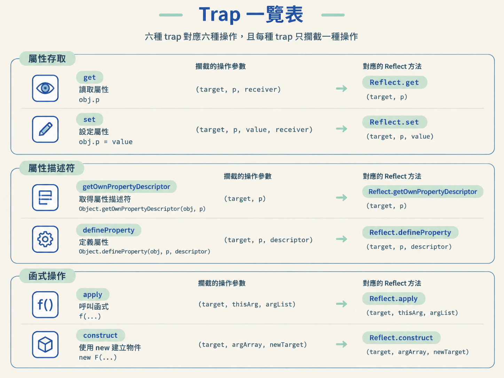

Proxy 的處理器（handler）由多個 trap 組成；每個 trap 負責攔截一種物件或函式操作。
| trap | 攔截的操作 | 參數 | 對應的 Reflect |
|---|---|---|---|
get | 讀取屬性 obj.p | (target, p, receiver) | Reflect.get(target, p) |
set | 設定屬性 obj.p = value | (target, p, value, receiver) | Reflect.set(target, p, value) |
getOwnPropertyDescriptor | Object.getOwnPropertyDescriptor(obj, p) | (target, p) | Reflect.getOwnPropertyDescriptor(target, p) |
defineProperty | Object.defineProperty(obj, p, descriptor) | (target, p, descriptor) | Reflect.defineProperty(target, p, descriptor) |
apply | 呼叫函式 f(...) | (target, thisArg, argList) | Reflect.apply(target, thisArg, argList) |
construct | 使用 new 建立物件 new F(...) | (target, argArray, newTarget) | Reflect.construct(target, argArray, newTarget) |

get 與 setget 攔截一般屬性讀取，set 攔截一般屬性設定。兩者適用於 obj.p 這類存取方式；走屬性描述符的操作則由其他 trap 處理。
var User = {
username: "bobo",
age: 20
}
User = new Proxy(User, {
get(target, p, receiver) {
console.log(`获取属性${p}操作`)
return Reflect.get(target, p);
},
set(target, p, value, receiver) {
console.log(`设置属性${p}操作`)
Reflect.set(target, p, value);
}
});| 參數 | 內容 |
|---|---|
target | 被代理的物件 |
p | 屬性名稱 |
value | set 要寫入的值 |
receiver | 代理後的物件 |
getOwnPropertyDescriptorgetOwnPropertyDescriptor 攔截 Object.getOwnPropertyDescriptor(obj, p)。它對應的是屬性描述符查詢，不是一般的 obj.p 讀取。
var User = {
username: "bobo",
age: 20,
address:"Bj"
}
User = new Proxy(User, {
get(target, p, receiver) {
console.log(`获取属性${p}操作`)
return Reflect.get(target, p);
},
set(target, p, value, receiver) {
console.log(`设置属性${p}操作`)
Reflect.set(target, p, value);
},
getOwnPropertyDescriptor(target, p){
let result;
result = Reflect.getOwnPropertyDescriptor(target, p);
console.log(`通过属性描述符获取属性${p}操作`)
return result;
}
});
//测试
console.log(User.username);
User.age = 30;
console.log(Object.getOwnPropertyDescriptor(User, "address").value);| 項目 | 內容 |
|---|---|
target | 被代理的物件 |
p | 屬性名稱 |
| 回傳值 | 屬性描述符物件 |
definePropertydefineProperty 攔截 Object.defineProperty(obj, p, descriptor)，也就是透過屬性描述符定義屬性的操作。
var Person = {};
Person = new Proxy(Person, {
get(target, p, receiver) {
console.log(`获取属性${p}操作`)
return Reflect.get(target, p);
},
set(target, p, value, receiver) {
console.log(`设置属性${p}操作`)
Reflect.set(target, p, value);
},
getOwnPropertyDescriptor(target, p){
let result;
result = Reflect.getOwnPropertyDescriptor(target, p);
console.log(`通过属性描述符获取属性${p}操作`)
return result;
},
defineProperty: function (target, p, descriptor){
console.log(`通过属性描述符设置属性${p}操作`)
let result;
result = Reflect.defineProperty(target, p, descriptor);
return result;
}
});
// 通过属性描述符给Person对象定义一个name属性
Object.defineProperty(Person, 'name', {
value: 'Bobo',
writable: true, // 允许修改属性值
enumerable: true, // 允许枚举属性
configurable: true // 允许删除或修改属性描述符
}
);
console.log(Person)| 項目 | 內容 |
|---|---|
target | 被代理的物件 |
p | 屬性名稱 |
descriptor | 屬性描述符物件，可包含 value、writable、enumerable、configurable 等欄位 |
| 回傳值 | 布林值，表示屬性是否定義成功 |
applyapply 攔截函式呼叫。代理目標必須是函式；呼叫代理後的函式時，便會進入這個 trap。
add = function(a,b){
console.log("add函数正在被调用");
return a+b;
}
add = new Proxy(add, {
apply:function (target, thisArg, argList){
// target: 函数对象。thisArg: 调用函数的this指针。argList:函数参数数组
let result;
result = Reflect.apply(target, thisArg, argList);
console.log(`${target.name}函数被调用，参数为:${argList}`);
return result;
}
});
add(1,2);| 參數 | 內容 |
|---|---|
target | 被代理的函式物件 |
thisArg | 呼叫函式時使用的 this |
argList | 傳入函式的參數陣列 |
constructconstruct 攔截使用 new 建立物件的操作。代理目標必須可作為建構函式使用。
function Animal(){
}
Animal = new Proxy(Animal, {
construct:function (target, argArray, newTarget) {
//target: 函数对象。argArray: 参数列表。newTarget: 代理后的对象
let result = Reflect.construct(target, argArray, newTarget);
console.log(`${target.name}对象被创建`);
return result;
}
});
animal = new Animal();| 參數 | 內容 |
|---|---|
target | 被代理的函式物件 |
argArray | 傳給建構函式的參數列表 |
newTarget | 代理後、實際由 new 呼叫的物件 |
| 看到的程式操作 | 對應 trap |
|---|---|
obj.p | get |
obj.p = value | set |
Object.getOwnPropertyDescriptor(obj, p) | getOwnPropertyDescriptor |
Object.defineProperty(obj, p, descriptor) | defineProperty |
f(...) | apply |
new F(...) | construct |
實作流程可回到前面的 hook 與 Proxy 操作內容：先用 Proxy 記錄目標程式讀取或設定的屬性，再以 hook 追蹤關鍵原生 API 的輸入與輸出。
補環境與檢測的說明則涵蓋三個部分：Proxy 用來找出環境缺口，hook 用來攔截單一函式或屬性，另以偽裝處理 toString 檢測。